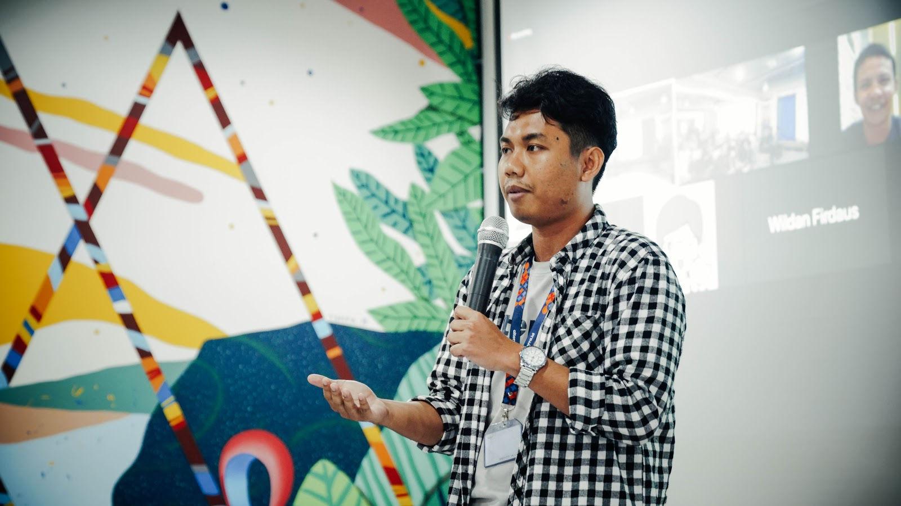
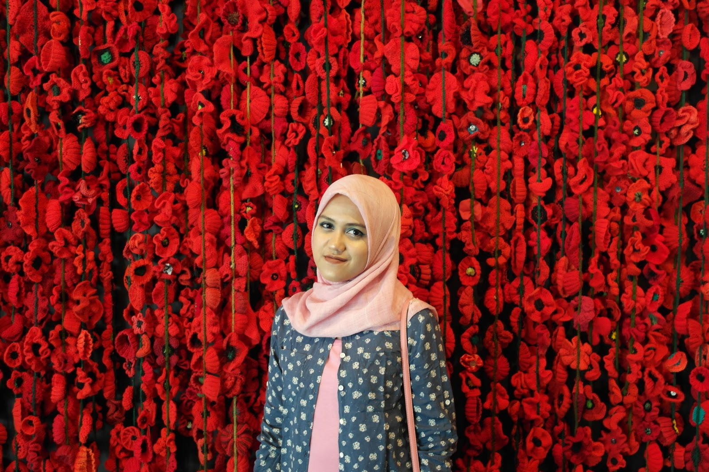
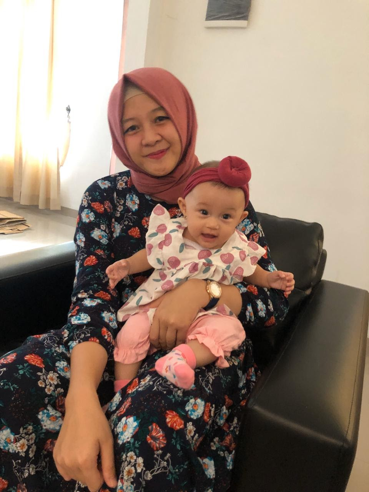
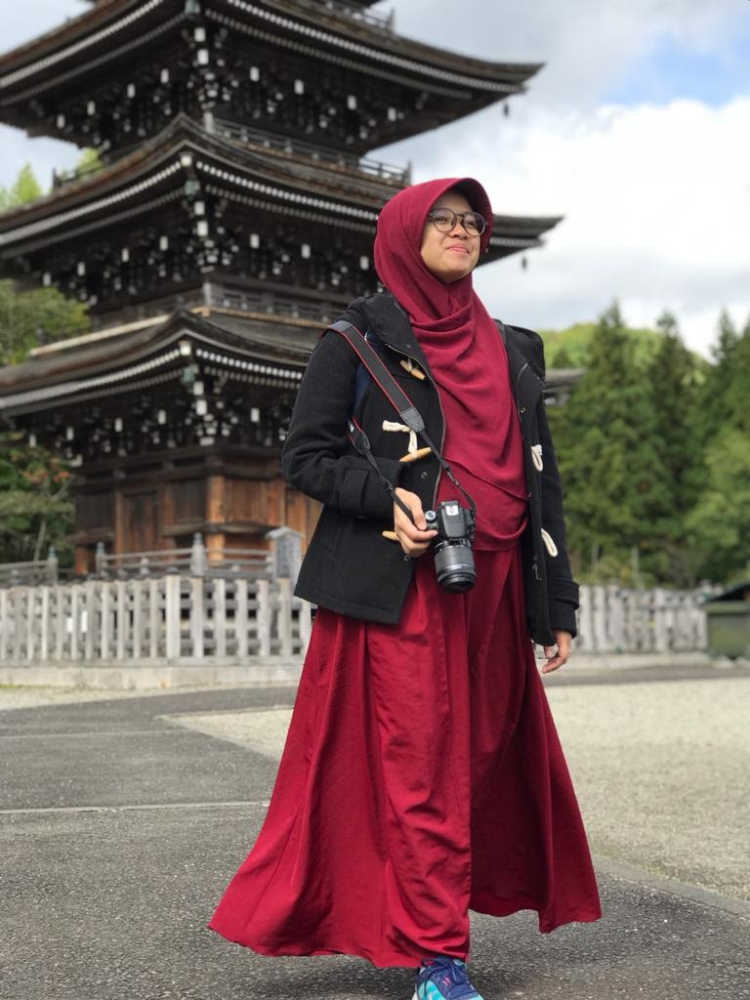
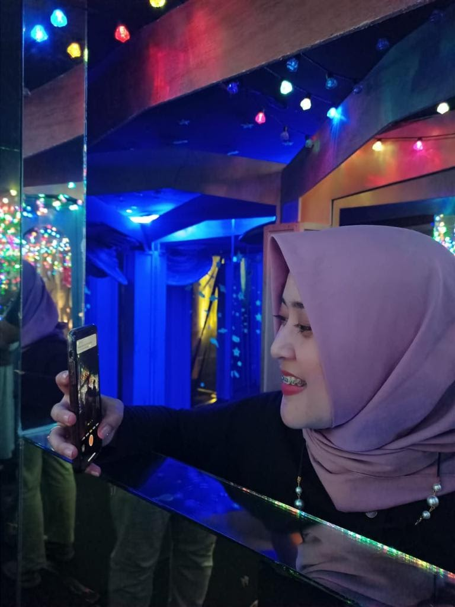
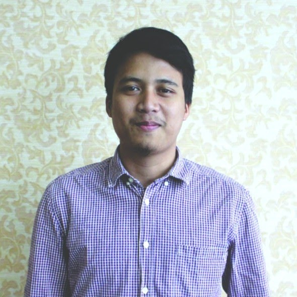
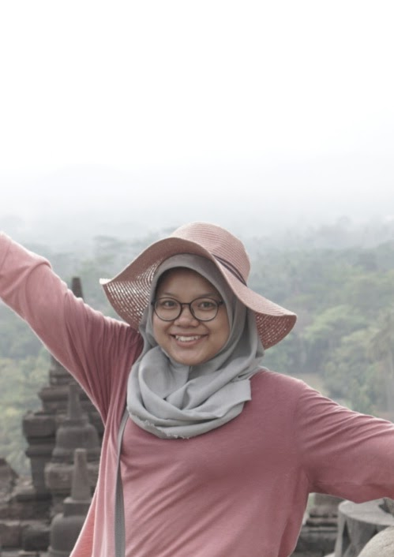
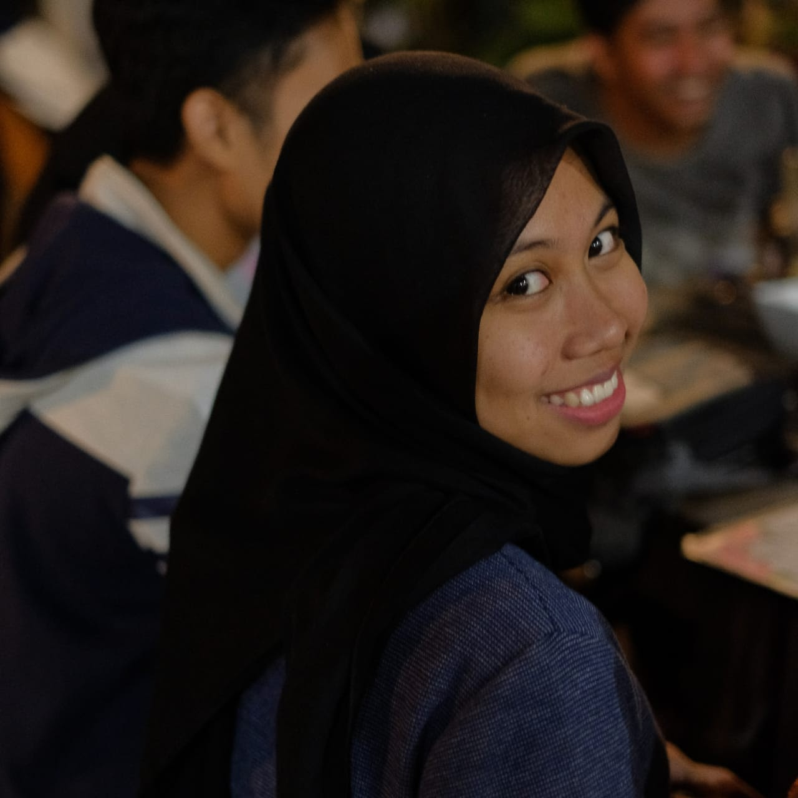

Charisma Fadzri Triprakoso (AS 2011)
Karyawan Swasta
Bergabung dengan Beasiswa Matahari karena dulu merasa sangat dibantu dengan beasiswa dan sudah bercita-cita untuk memanfaatkan komunitas Astronomi Indonesia yang sederhana ini menjadi sangat bermanfaat.

Dian Puspita Triani (AS 2011)
Mahasiswa
Bergabung dengan Beasiswa Matahari untuk membantu mahasiswa yang membutuhkan bantuan dalam menyelesaikan studinya dan menjaga silaturahmi dengan sesama alumni.

Sanny Marselina (AS 2011)
Seorang Istri dan Ibu beranak satu juga seorang pegawai disalah satu Bank syariah swasta Indonesia.
Bergabung dengan Beasiswa Matahari karena ingin memiliki kehidupan yang bermanfaat bagi sekitar, terlebih lagi Astronomi ITB merupakan salah satu tempat paling berkesan bagi saya. Semoga kontribusi kecil saya bisa membantu adik adik Astronomi yang sedang berkuliah tanpa pusing memikirkan masalah ekonomi.

Itsna Khoirul Fitriani (AS 2011)
Mahasiswa tingkat akhir dan ibu rumah tangga
Berkuliah di AS ITB dengan komunitas relatif kecil tidak hanya membuat saya mengenal ilmu astronomi dasar, tapi juga saya mengenal hubungan kekeluargaan tanpa ada ikatan darah ataupun pernikahan. Bergabung bersama Besmat membangkitkan lagi rasa kekeluargaan semasa kuliah itu dengan bertemu adik-adik baru setiap periodenya.

Pratiwi Kusumawardani (AS 2011)
Karyawan BUMN
Bergabung dengan Beasiswa Astronomi karena menyadari bahwa setiap orang memiliki peluang yang sama, selama memiliki keinginan yang kuat dan terus berusaha. Terlepas dari background dan apa yang dia miliki, semua memiliki kesempatan yang sama, termasuk yang memiliki keterbatasan dalam finansial maupun skill, akan ada jalan jika mau berusaha. Itu yang mendasari kenapa ingin Beasiswa Matahari ini, menjadi jalan untuk mahasiswa terus berkembang terlepas dari latar belakangnya.

Yogi Alief Putra (AS 2013)
Human Resources at Startup
Yogi memiliki keyakinan bahwa mahasiswa astronomi memiliki potensi yang besar untuk bersaing di industri, salah satunya tech & startup. Namun untuk mencapainya dibutuhkan pemenuhan dasar terlebih dahulu. Dengan memenuhi kebutuhan paling fundamental seorang mahasiswa, yaitu keuangan, diharapkan dapat memberikan ruang bertumbuh lebih luas lagi agar dapat mencapai karir yang bermanfaat bagi banyak orang.
Alif Husnul Fikri (AS 2013)
Pegawai Swasta
Bergabung dengan Beasiswa Matahari karena ingin membantu sesama dan menjadi lebih bermanfaat

Ade Nur Istiqomah (AS 2014)
Pegawai Swasta
Ade percaya bahwa kendala keuangan bukanlah hambatan dalam mengejar cita-cita. Melalui Beasiswa Matahari, Ade berharap bantuan sekecil apapun dalam bentuk apapun, dapat berarti sangat besar bagi teman-teman mahasiswa Astronomi ITB yang membutuhkan.

Adinda Febriansari Riyadi (AS 2014)
Pegawai Negeri Sipil
Saya ingin membagikan perasaan yakin dan semangat kepada teman-teman mahasiswa Astronomi ITB dalam meraih mimpi mereka meskipun ada masalah ekonomi, seperti yang dulu pernah saya dapatkan dari Beasiswa Matahari.